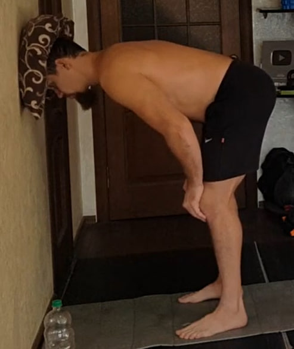
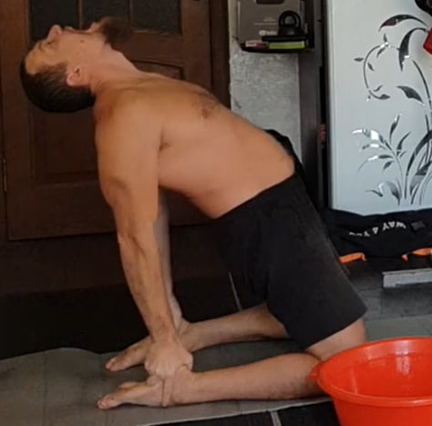
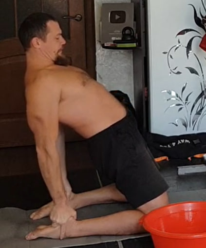

Día 26: isometría y control + cuello y postura (sin equipo)
Hoy trabajamos isometría y control, cuello y postura con ejercicios simples que caben en una habitación. El objetivo es construir fuerza útil, resistencia y control corporal con el mínimo de equipo.
Prioriza la técnica, respira con control y acumula consistencia: incluso una sesión corta suma cuando la repites día tras día.
1. “Tirón de almohada” bajo la barbilla — 1×10 (10 s)
Antes de empezar: haz el calentamiento y repasa la respiración. (No lo saltes.)
Protocolo isométrico: tensión 10 s + descanso 5 s × 10 repeticiones (por lado, si aplica). Respira 3‑3‑3 durante la tensión (inhalar 3 s, retener 3 s, exhalar 3 s) y usa 3‑6‑3 entre series para recuperar. Más detalles: Respiración.
Coloca una almohada bajo la barbilla. Inclina la cabeza hacia delante para atraparla entre la barbilla y el pecho. Con las manos tira suavemente de la almohada “como si quisieras sacarla”, pero resiste apretándola más fuerte al presionar hacia abajo con la barbilla .
Ejecución: 1 serie de 10 repeticiones.
2. Trasvase de agua con la boca — 2 litros
Antes de empezar: haz el calentamiento y repasa la respiración. (No lo saltes.)

Necesitas dos recipientes. Llena uno con agua fresca y fría (hoy: 2 litros) y añade un par de cucharadas de sal. Coloca ambos recipientes uno al lado del otro.
Toma un buen trago (sin tragar), mueve la cabeza hacia el recipiente vacío y escupe con fuerza. Importante: no dejes que el agua se escurra sin control; debe salir como un chorro.
3. Extensión + “mandíbula” y barbilla al pecho — 1×10
Antes de empezar: haz el calentamiento y repasa la respiración. (No lo saltes.)
Protocolo isométrico: tensión 10 s + descanso 5 s × 10 repeticiones (por lado, si aplica). Respira 3‑3‑3 durante la tensión (inhalar 3 s, retener 3 s, exhalar 3 s) y usa 3‑6‑3 entre series para recuperar. Más detalles: Respiración.


Arrodíllate y siéntate sobre los pies. Reclina el torso hacia atrás y apoya las manos en los talones (si tienes la espalda rígida, ve solo hasta donde sea cómodo).
Parte A (mandíbula): en la posición de extensión, abre y cierra la boca lo más amplio posible con control, sin tirones . Con el tiempo puedes aumentar el número de repeticiones .
Parte B (barbilla al pecho): desde esa misma posición, lleva la barbilla al pecho y luego vuelve a la extensión.
Ejecución: 1 serie de 10 repeticiones.
4. Isometría de cuello con mano en la frente — 1×10 (10 s)
Antes de empezar: haz el calentamiento y repasa la respiración. (No lo saltes.)
Protocolo isométrico: tensión 10 s + descanso 5 s × 10 repeticiones (por lado, si aplica). Respira 3‑3‑3 durante la tensión (inhalar 3 s, retener 3 s, exhalar 3 s) y usa 3‑6‑3 entre series para recuperar. Más detalles: Respiración.

Misma técnica que en el ejercicio 4. Ejecución: 1 serie de 10 repeticiones. Ejecución: 1 serie de 10 repeticiones.
5. Círculos pequeños con almohada en la cabeza — 10 + 10
Antes de empezar: haz el calentamiento y repasa la respiración. (No lo saltes.)

Busca un punto sólido donde puedas presionar hacia arriba con una almohada sobre la cabeza (por ejemplo, bajo el marco de una puerta). Aplica solo la presión justa para mantener la almohada en su sitio.
Mantén la cabeza quieta y mueve el cuerpo (desde el cuello hacia abajo) en círculos muy pequeños.
Ejecución: 10 círculos en sentido horario + 10 en sentido antihorario.
6. “Tirón de almohada” bajo la barbilla — 1×15 (10 s)
Antes de empezar: haz el calentamiento y repasa la respiración. (No lo saltes.)
Protocolo isométrico: tensión 10 s + descanso 5 s × 10 repeticiones (por lado, si aplica). Respira 3‑3‑3 durante la tensión (inhalar 3 s, retener 3 s, exhalar 3 s) y usa 3‑6‑3 entre series para recuperar. Más detalles: Respiración.

Misma técnica que en el ejercicio 1: sujeta la almohada entre la barbilla y el pecho, tira con las manos “como si quisieras sacarla” y resiste presionando con la barbilla. Ejecución: 1 serie de 15 repeticiones. Misma técnica que en el ejercicio 1: sujeta la almohada entre la barbilla y el pecho, tira con las manos “como si quisieras sacarla” y resiste presionando con la barbilla. Ejecución: 1 serie de 15 repeticiones.
7. Trasvase de agua con la boca — 3 litros
Antes de empezar: haz el calentamiento y repasa la respiración. (No lo saltes.)
Igual que el ejercicio 2, pero hoy el volumen total es de 3 litros. Agua fresca y fría con un par de cucharadas de sal. Escupe con fuerza: no dejes que el agua se escurra.
8. Extensión + “mandíbula” y barbilla al pecho — 2×10
Antes de empezar: haz el calentamiento y repasa la respiración. (No lo saltes.)
Protocolo isométrico: tensión 10 s + descanso 5 s × 10 repeticiones (por lado, si aplica). Respira 3‑3‑3 durante la tensión (inhalar 3 s, retener 3 s, exhalar 3 s) y usa 3‑6‑3 entre series para recuperar. Más detalles: Respiración.


Misma técnica que en el ejercicio 3. En extensión: abre y cierra la boca con control, sin tirones . Luego barbilla al pecho y vuelve, manteniendo 10 segundos en cada repetición.
Ejecución: 2 series de 10 repeticiones.
9. Isometría de cuello con mano en la frente — 2×10 (10 s)
Antes de empezar: haz el calentamiento y repasa la respiración. (No lo saltes.)
Protocolo isométrico: tensión 10 s + descanso 5 s × 10 repeticiones (por lado, si aplica). Respira 3‑3‑3 durante la tensión (inhalar 3 s, retener 3 s, exhalar 3 s) y usa 3‑6‑3 entre series para recuperar. Más detalles: Respiración.

Misma técnica que en el ejercicio 4: mano en la frente, empuja con la cabeza hasta el punto de máxima resistencia y mantén 10 segundos.
Espalda recta y respira (no aguantes el aire).
Ejecución: 2 series de 10 repeticiones.
10. Círculos pequeños con almohada en la cabeza — 5 + 5
Antes de empezar: haz el calentamiento y repasa la respiración. (No lo saltes.)

Misma técnica que en el ejercicio 5: presión ligera para fijar la almohada, cabeza quieta y círculos muy pequeños con el cuerpo. Ejecución: 5 círculos en sentido horario + 5 en sentido antihorario. Misma técnica que en el ejercicio 5: presión ligera para fijar la almohada, cabeza quieta y círculos muy pequeños con el cuerpo. Ejecución: 5 círculos en sentido horario + 5 en sentido antihorario.
11. Isometría de cuello con mano en la frente — 1×10 (10 s)
Antes de empezar: haz el calentamiento y repasa la respiración. (No lo saltes.)
Protocolo isométrico: tensión 10 s + descanso 5 s × 10 repeticiones (por lado, si aplica). Respira 3‑3‑3 durante la tensión (inhalar 3 s, retener 3 s, exhalar 3 s) y usa 3‑6‑3 entre series para recuperar. Más detalles: Respiración.
Misma técnica que en el ejercicio 4. Ejecución: 1 serie de 10 repeticiones. Misma técnica que en el ejercicio 4. Ejecución: 1 serie de 10 repeticiones.
12. Extensión + barbilla al pecho — 1×10
Antes de empezar: haz el calentamiento y repasa la respiración. (No lo saltes.)
Protocolo isométrico: tensión 10 s + descanso 5 s × 10 repeticiones (por lado, si aplica). Respira 3‑3‑3 durante la tensión (inhalar 3 s, retener 3 s, exhalar 3 s) y usa 3‑6‑3 entre series para recuperar. Más detalles: Respiración.


Misma técnica que en el ejercicio 3: en extensión, movimiento con control, sin tirones . Barbilla al pecho y vuelve, manteniendo 10 segundos en cada repetición. Ejecución: 1 serie de 10 repeticiones. Misma técnica que en el ejercicio 3: en extensión, movimiento con control, sin tirones . Barbilla al pecho y vuelve, manteniendo 10 segundos en cada repetición. Ejecución: 1 serie de 10 repeticiones.
Cierre
Experimenta: ajusta ángulos, rango y puntos de tensión hasta encontrar la versión que te sienta bien. Lo importante es que el entrenamiento sea sostenible y te dé ganas de volver. Crea condiciones para entrenar con regularidad, aunque sea poco: 10 minutos cuentan. Esta rutina está pensada para eso: que puedas cumplir incluso con poco espacio, poco tiempo y circunstancias difíciles.